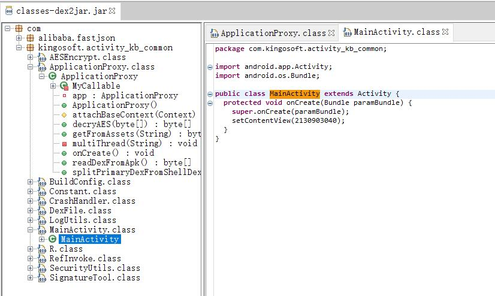
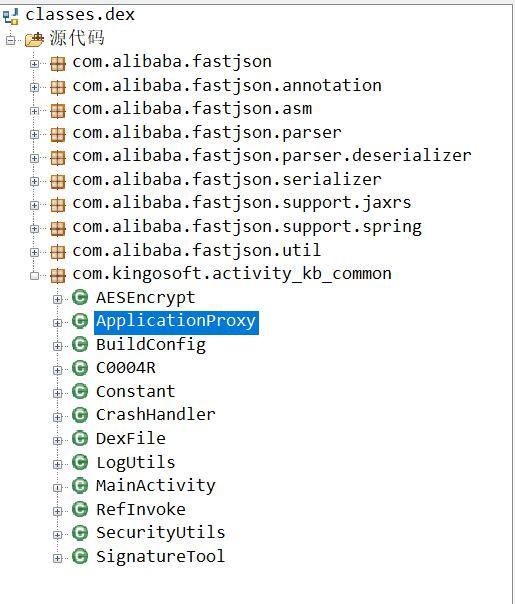
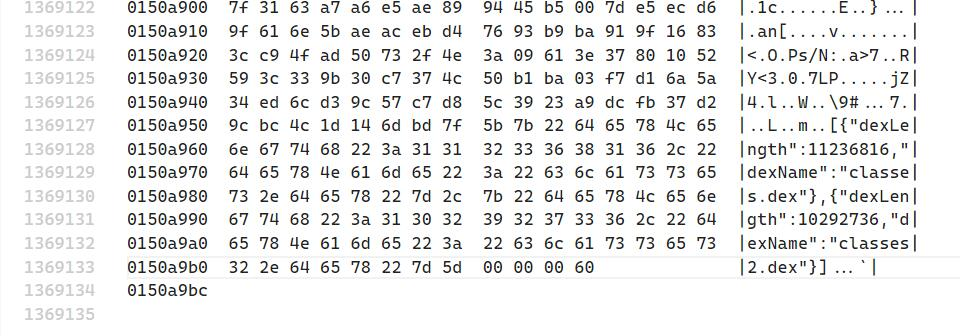
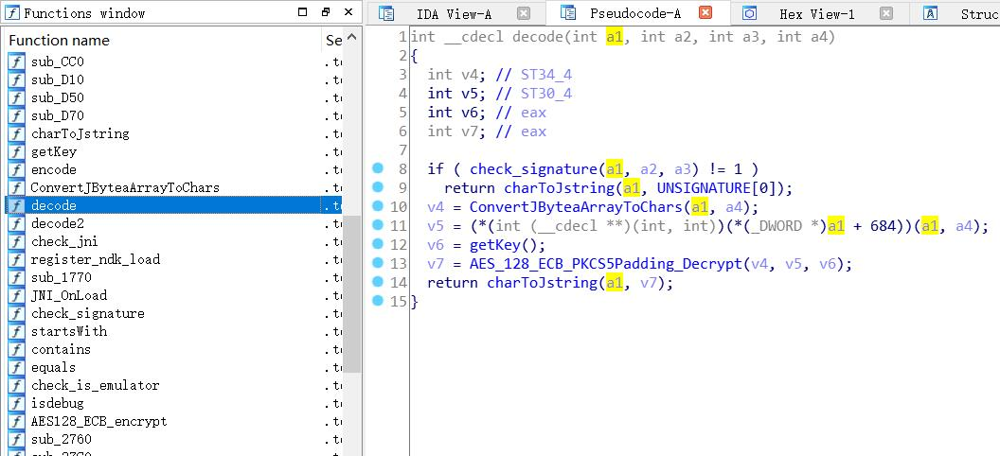
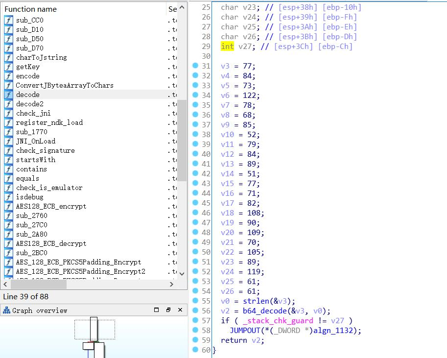
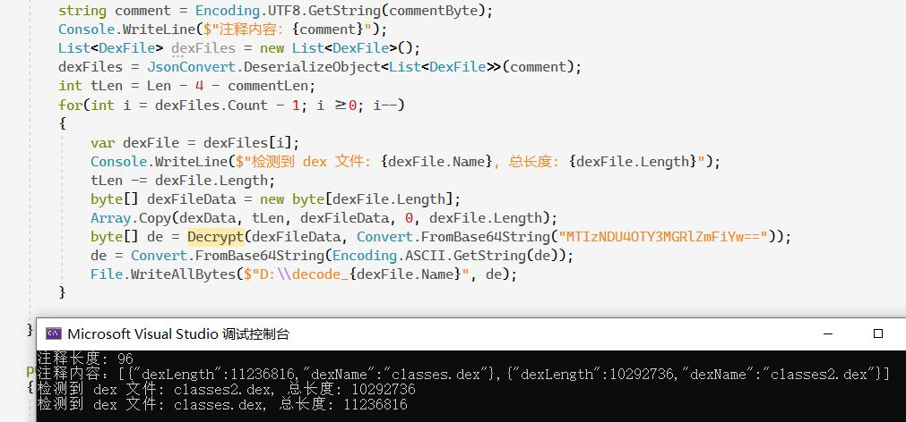
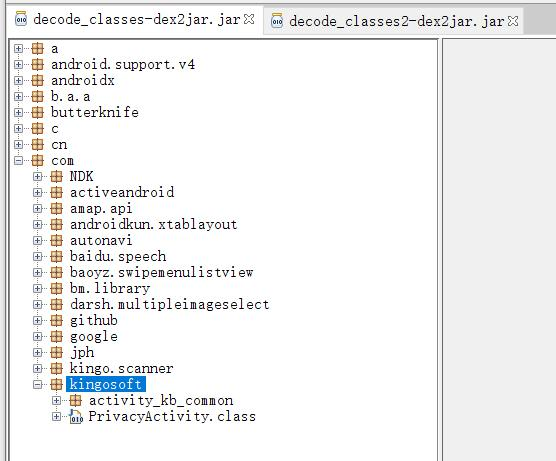
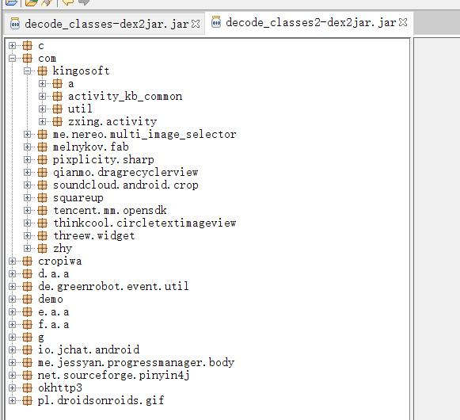
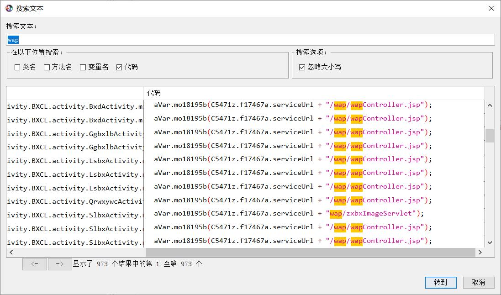

本文仅供学习交流，请勿用于违法用途。
博主第一次尝试 APK 逆向，以下分析内容针对 v2.6.109 版本的APP。
基本分析 首先是基本操作，使用 apktool 解压得到 classes.dex，然后使用 dex2jar 将 classes.dex 转化为 jar 文件，再使用 jd-gui 打开 jar 文件，查看反编译出来的代码。反编译结果如下图所示。

看到代码的第一反应是惊讶与疑惑，这代码也太少太简单了吧！我以为是反编译的结果不对，又使用 jadx-gui 打开这个 dex 文件。结果如下图所示。

可以看出两个软件反编译的结果是一样的，也就是反编译的结果是没有问题的。使用文本搜索搜索了下一些文本，但是都找不到。很显然，这个 APP 真正的代码并没有被反编译出来。那么真正的代码都藏在了哪里呢？
查阅了一些有关 APK 加固的文章，一种识别 APK 被加固的方式是查看反编译出来的源代码的包名。比如有 tencent 字样，那么多半是腾讯的加固。这个 APP 反编译出来的源代码里确实有 alibaba 的字样，但是这个只是 fastjson 库的包名。结合网上的逆向资料来看，这也不像 alibaba 加固后的样子。
这个时候，我猜测这是一种自制的加固方式。浏览反编译出来的代码，里面的”AESEncrypt“、”ApplicationProxy“、”RefInvoke“ 和 ”SecurityUtils“ 让我更相信这个 APP 被加固了。
于是我开始仔细阅读里面的源代码，不久我就找到了一个很可能是突破口的函数。这是一个叫做 ”readDexFromApk“ 的函数，它的定义如下：
1 2 3 4 5 6 7 8 9 10 11 12 13 14 15 16 17 18 19 20 21 22 public byte [] readDexFromApk() throws IOException { ByteArrayOutputStream dexByteArrayOutputSteam = new ByteArrayOutputStream (); System.out.println(getApplicationInfo().sourceDir); ZipInputStream localZipInputStream = new ZipInputStream (new BufferedInputStream (new FileInputStream (getApplicationInfo().sourceDir))); while (true ) { ZipEntry localZipEntry = localZipInputStream.getNextEntry(); if (localZipEntry == null ) { localZipInputStream.close(); localZipInputStream.close(); return dexByteArrayOutputSteam.toByteArray(); } else if (localZipEntry.getName().equals("classes.dex" )) { byte [] arrayOfByte = new byte [1024 ]; while (true ) { int i = localZipInputStream.read(arrayOfByte); if (i == -1 ) { break ; } dexByteArrayOutputSteam.write(arrayOfByte, 0 , i); } } } }
这段代码没有被混淆过，可读性很好。这段代码的大意是解压自己这个 apk 文件，逐个分析 apk 里面的文件，如果有名为 classes.dex 的文件，那么就读取这个 dex 文件的所有内容，最后返回读取到的内容。
这个函数被一个叫 multiThread 的函数调用。它的代码如下：
这个函数很长，建议读者先往下读我对它的拆解分析，然后再回头阅读这个函数的代码。
1 2 3 4 5 6 7 8 9 10 11 12 13 14 15 16 17 18 19 20 21 22 23 24 25 26 27 28 29 30 31 32 33 34 35 36 37 38 39 40 41 42 43 44 45 46 47 48 49 50 51 52 53 54 private void multiThread (String primaryDexDir) { try { byte [] data = readDexFromApk(); int shellDexLen = data.length; byte [] dexFileCommentLenByte = new byte [4 ]; System.arraycopy(data, shellDexLen - 4 , dexFileCommentLenByte, 0 , 4 ); int dexFileCommentLen = new DataInputStream (new ByteArrayInputStream (dexFileCommentLenByte)).readInt(); byte [] dexFileCommentByte = new byte [dexFileCommentLen]; System.arraycopy(data, (shellDexLen - 4 ) - dexFileCommentLen, dexFileCommentByte, 0 , dexFileCommentLen); String dexFileComment = new String (dexFileCommentByte); LogUtils.m3d("dex comment:" + dexFileComment); ArrayList<DexFile> dexFileArrayList = (ArrayList) JSON.parseArray(dexFileComment, DexFile.class); int currentReadEndIndex = (shellDexLen - 4 ) - dexFileCommentLen; ExecutorService pool = Executors.newFixedThreadPool(dexFileArrayList.size()); ArrayList arrayList = new ArrayList (); List<String> dexnamelist = new ArrayList <>(); for (int i = dexFileArrayList.size() - 1 ; i >= 0 ; i--) { DexFile dexFile = dexFileArrayList.get(i); byte [] primaryDexData = new byte [dexFile.getDexLength()]; System.arraycopy(data, currentReadEndIndex - dexFile.getDexLength(), primaryDexData, 0 , dexFile.getDexLength()); arrayList.add(pool.submit(new MyCallable (i, primaryDexData, this ))); dexnamelist.add(dexFile.getDexName()); currentReadEndIndex -= dexFile.getDexLength(); } int i2 = arrayList.size() - 1 ; while (i2 >= 0 ) { try { byte [] primaryDexData2 = (byte []) ((Future) arrayList.get(i2)).get(60 , TimeUnit.SECONDS); System.out.println(" primaryDexData encCD size=" + primaryDexData2.length); File file = new File (primaryDexDir, dexnamelist.get(i2)); if (!file.exists()) { file.createNewFile(); } FileOutputStream fileOutputStream = new FileOutputStream (file); fileOutputStream.write(primaryDexData2); fileOutputStream.close(); i2--; } catch (InterruptedException e) { e.printStackTrace(); File odex = getDir("payload_odex" , 0 ); getDir("payload_dex" , 0 ).delete(); odex.delete(); return ; } catch (ExecutionException e2) { e2.printStackTrace(); File odex2 = getDir("payload_odex" , 0 ); getDir("payload_dex" , 0 ).delete(); odex2.delete(); return ; } } } catch (Exception e3) { } }
这段代码首先调用 readDexFromApk 读取 APP 自己的 Dex 文件，把数据存入变量 data 中。然后读取了 Dex 文件最末尾的 4 个字节，以 int 类型解读这 4 个字节，存入到变量 dexFileCommentLen 中。
1 2 3 4 5 6 7 8 9 byte [] data = readDexFromApk();int shellDexLen = data.length;byte [] dexFileCommentLenByte = new byte [4 ];System.arraycopy(data, shellDexLen - 4 , dexFileCommentLenByte0, 4 ); int dexFileCommentLen = new DataInputStream (new ByteArrayInputStream (dexFileCommentLenByte)).readInt();
结合变量名不难猜测，这个 int 变量描述的是一个 ”comment“ 的长度，而且是 ”dex file comment“。很显然，这个 App 的 dex 文件里另有乾坤，接下来多半是读取这个 ”dex file comment“，并且进行分析。
紧接着上面的这几行代码的大概含义是：从刚刚读取 4 个字节的位置继续向前 读取 dexFileCommentLen 那么多个字节，并把这些字节数据以文本的形式解读，存入到 String 型变量 dexFileComment 中。最后用 JSON 库解析读取到的内容。
1 2 3 4 5 6 7 8 9 byte [] dexFileCommentByte = new byte [dexFileCommentLen];System.arraycopy(data, (shellDexLen - 4 ) - dexFileCommentLen , dexFileCommentByte, 0 , dexFileCommentLen); String dexFileComment = new String (dexFileCommentByte);LogUtils.m3d("dex comment:" + dexFileComment); ArrayList<DexFile> dexFileArrayList = (ArrayList) JSOparseArray(dexFileComment, DexFile.class);
读完上面的代码，看来我的思路是对的。这个 dexFileComment 不仅是文本，而且还是 JSON 格式的文本。接下来我已经迫不及待想要验证这段代码的真实性。
一开始我使用的是 VSCode + hexdump 插件来阅读 dex 文件，但是这个 dex 文件实在是太大了，受限于插件，根本读不到末尾的内容。于是我又使用 linux 里的 hexdump 工具查看。
在 wsl 中执行：
1 hexdump -C classes.dex > hexdump.txt
最终得到的 hexdump.txt 足足有 100MB 那么大！我直接翻到末尾，内容如下：

可以看到，这个 App 的 dex 文件的末尾确实有一段 JSON 文本。最后四个字节的内容对应十进制 96，和 JSON 文本的长度一致。这说明上面的代码是真实有效的，确实是这次逆向的突破口。
顺着这个思路继续来解读这段 JSON 文本。根据这段 JSON 文本，可以了解到在哪个地方藏着两个 dex 文件，名字分别是 classes.dex 和 classes2.dex，同时给出了这两个文件的长度。
回到上面提到的 multiThread 这个函数的代码。JSON 库解析这段 JSON 文本后，得到了一个 DexFile 对象的数组。其中 DexFile 类的定义如下：
1 2 3 4 5 public class DexFile { private int dexLength; private String dexName; }
DexFile 类中的两个字段和看到的 JSON 文本里包含的字段是一致的。
multiThread 函数接下来会从读取完 dexFileComment 的位置继续往前读取内容，读取的长度来自于 DexFile 的 dexLength 字段：
1 2 3 4 5 6 7 8 for (int i = dexFileArrayList.size() - 1 ; i >= 0 ; i--) { DexFile dexFile = dexFileArrayList.get(i); byte [] primaryDexData = new byte [dexFile.getDexLength()]; System.arraycopy(data, currentReadEndIndex - dexFile.getDexLength(), primaryDexData, 0 , dexFile.getDexLength()); arrayList.add(pool.submit(new MyCallable (i, primaryDexData, this ))); dexnamelist.add(dexFile.getDexName()); currentReadEndIndex -= dexFile.getDexLength(); }
看来那两个藏起来的 dex 文件就藏在这个 App 的 dex 文件末尾。这两个隐藏起来的 dex 文件的数据，扔到了线程池里进行处理。这里的线程池很显然对应了这个函数名称 multiThread。原来这个函数的 “多线程” 指的是多线程处理被隐藏的 dex 文件数据。
我没有学习过 java 语言，但是我猜测任务交给线程池之后应该会执行 MyCallable 这个类的 call 方法。
1 2 3 4 5 6 7 8 9 private class MyCallable implements Callable { public Object call () throws Exception { long startTime = System.nanoTime(); byte [] primaryDexData = Base64.decode(new String (SecurityUtils.AESDecrypt(AESEncrypt.decode(this .innerapp, Base64.decode(Constant.AES_PRIVATE_KEY, 2 ), Constant.AES_IV, Constant.AES_TYPE, this .innerDexData), "UTF-8" ), 2 ); System.out.println("程序运行时间： " + this .num + "--" + (System.nanoTime() - startTime) + "ns" ); return primaryDexData; } }
我这么猜测不是毫无道理的，因为我认为被隐藏起来的 dex 很可能不会明文保存，不然开头看到的 AESEncrypt 类是干嘛用的？
这个 call 函数里正好用到了 AESEncrypt 类和 SecurityUtils 类。可以看出，这段代码确实是对刚刚读取的隐藏 dex 文件的数据进行解密。
上面这段代码中涉及的 Constan 类的内容如下：
1 2 3 4 5 public class Constant { public static final String AES_IV = "1234567898765432" ; public static final String AES_PRIVATE_KEY = "m/EEDbJozOx74V16O9VNgmcjCrhDfT/sMdENbl/MOiY=" ; public static final String AES_TYPE = "AES/ECB/PKCS5Padding" ; }
我猜测这里的内容指的是加密类型和密钥一类的参数。进一步可以猜测，被隐藏的 dex 文件是被 AES 算法加密的。
但是让我很疑惑的是，这段代码用到了两个 AES 解密的函数：“SecurityUtils.AESDecrypt” 和 “AESEncrypt.decode”，他们的定义如下：
1 2 3 4 5 6 7 public static byte [] AESDecrypt(String privateKey, String iv, String AES_TYPE, byte [] data) { new IvParameterSpec (iv.getBytes()); SecretKeySpec key = new SecretKeySpec (privateKey.getBytes(), "AES" ); Cipher cipher = Cipher.getInstance(AES_TYPE); cipher.init(2 , key); return cipher.doFinal(data); }
1 2 3 4 5 6 7 8 9 10 11 public class AESEncrypt { public static native int checkSignature (Object obj) ; public static native String decode (Object obj, byte [] bArr) ; public static native String encode (Object obj, String str) ; static { System.loadLibrary("JNIEncrypt" ); } }
暂且不管这两个函数的代码是什么意思。（实际上我并不了解 AES 算法，也读不懂这两个函数的代码）从这两个函数签名就可以分析到的是 SecurityUtils.AESDecrypt 需要的参数比 AESEncrypt.decode 的参数多了两个。
查阅资料了解到 AES 算法加解密是需要初始向量（即iv）和填充类型（PKCS5Padding）等参数的。
我实在无法理解为什么会有两个 AES 加解密的函数，我想程序员应该是非常懒而且非常讨厌重复的，在同一个程序里使用两个 AES 加解密类，实在不符合常理。
根据我的坏运气体质，写程序验证多半会解密失败。到时候要定位错误，同时涉及到两个 AES 解密，调试成本会很高。
因此我没有去验证这一段代码是不是真正的解密代码。
柳暗花明 我继续阅读其他的代码，重点挑选和 AES 有关的函数，很快发现了新的突破口：
1 2 3 4 5 6 7 8 9 10 public byte [] decryAES(byte [] data) { byte [] baseDEC = null ; try { baseDEC = Base64.decode(AESEncrypt.decode(this , data), 2 ); System.out.println(" encCD size=" + baseDEC.length); return baseDEC; } catch (Exception e) { return baseDEC; } }
这个函数只调用了 AESEncrypt.decode 进行解密，要写程序验证，即使解密出现失败，我也有信心调试出错误原因。于是我查了下这个函数的引用，它被 splitPrimaryDexFromShellDex 函数所调用：
1 2 3 4 5 6 7 8 9 10 11 12 13 14 15 16 17 18 19 20 21 22 23 24 25 26 public void splitPrimaryDexFromShellDex (byte [] data, String primaryDexDir) { int shellDexLen = data.length; byte [] dexFileCommentLenByte = new byte [4 ]; System.arraycopy(data, shellDexLen - 4 , dexFileCommentLenByte, 0 , 4 ); int dexFileCommentLen = new DataInputStream (new ByteArrayInputStream (dexFileCommentLenByte)).readInt(); byte [] dexFileCommentByte = new byte [dexFileCommentLen]; System.arraycopy(data, (shellDexLen - 4 ) - dexFileCommentLen, dexFileCommentByte, 0 , dexFileCommentLen); String dexFileComment = new String (dexFileCommentByte); LogUtils.m3d("dex comment:" + dexFileComment); ArrayList<DexFile> dexFileArrayList = (ArrayList) JSON.parseArray(dexFileComment, DexFile.class); int currentReadEndIndex = (shellDexLen - 4 ) - dexFileCommentLen; for (int i = dexFileArrayList.size() - 1 ; i >= 0 ; i--) { DexFile dexFile = dexFileArrayList.get(i); byte [] primaryDexData = new byte [dexFile.getDexLength()]; System.arraycopy(data, currentReadEndIndex - dexFile.getDexLength(), primaryDexData, 0 , dexFile.getDexLength()); byte [] primaryDexData2 = decryAES(primaryDexData); File file = new File (primaryDexDir, dexFile.getDexName()); if (!file.exists()) { file.createNewFile(); } FileOutputStream localFileOutputStream = new FileOutputStream (file); localFileOutputStream.write(primaryDexData2); localFileOutputStream.close(); currentReadEndIndex -= dexFile.getDexLength(); } }
这个函数执行的流程和 multiThread 函数大致相同，也是读取隐藏的 dex 文件数据，然后对各个隐藏 dex 文件数据调用decryAES 函数进行解密，解密后的数据保存到磁盘中。
相比于刚刚 call 函数里的解密方式，更容易去验证这个函数的解密方式是否正确。
解密的核心函数是 AESEncrypt.decode，这个函数的内容不在 java 层而在 native 层。看这个函数的定义就知道，带着“native”关键词，并且来自“JNIEncrypt”库。
调试 native 库就要用到工具 IDA 了。使用 IDA 打开 x86 目录下的 libJNIEncrypt.so 文件，如下图所示，找到 decode 函数后按下 F5 反编译为 c 语言代码。

从代码中的 AES_128_ECB_PKCS5Padding_Decrypt 函数可以了解到很多很多信息。AES 解密所需要的信息这里基本上都包含了。但是我很疑惑为什么这里解密没有用到初始向量（iv）。要知道 java 层的 AES 解密以及 Constants 类都有初始向量 iv 的定义。
查阅资料后发现，原来 AES 算法在 ECB 模式下，初始向量不是必要的参数。
但是 java 层的也是 ECB 模式！为什么它还是用到了初始向量呢？我没有去进一步了解，往后看吧，我直接成功了。（剧透警告）
分析一下我只看懂的三行代码：
1 2 3 4 5 6 v6 = getKey(); v7 = AES_128_ECB_PKCS5Padding_Decrypt(v4, v5, v6); return charToJstring(a1, v7);
于是我去看了看 getKey 函数，我想这里能够知道密钥是怎么来的：

这次我能看懂的代码只剩下 2 行了：
1 2 3 4 v0 = strlen (&v3); v2 = b64_decode(&v3, v0);
从C语言的语法来理解，v3 应该是 char 变量，是不应该对它使用 strlen 的，但是这里偏偏就对它使用了strlen。
无奈我是第一次使用 IDA，所以我只能认为不能用常规的C语言语法来理解这段代码。我猜测 v3 到 v26 那些变量，实际上是同一个字符串的内容，它们在内存中的位置是连续的。
我又注意到 v25 和 v26 的字符一样，结合 base64 编码的特性，我猜测这两个字符很可能就是两个等号。翻了翻 ASCII 码表，dec 61对应的字符确实是等号，我的想法是对的。
最终，我得到了下面这些数据：
1 2 3 "77 84 73 122 78 68 85 52 79 84 89 51 77 71 82 108 90 109 70 105 89 119 61 61" "MTIzNDU4OTY3MGRlZmFiYw==" "1234589670defabc"
虽然我是第一次进行 App 逆向，但是我见过别人的逆向文章，别人逆向出来的密钥，有很多都是 123456 这样的简单密钥。我也逆向出了个“1234589670defabc”，因此我逆向得到的也是密钥。（哈哈哈哈，别不信，我是对的）
接下来我用 C# 写了个程序，去验证我的猜想。
1 2 3 4 5 6 7 8 9 10 11 12 13 14 15 16 17 18 19 20 21 22 23 24 25 26 27 28 29 30 31 32 33 34 35 36 37 38 39 40 41 42 43 44 45 46 47 48 49 50 51 52 53 54 55 56 57 58 59 60 61 62 63 64 using Newtonsoft.Json;using Newtonsoft.Json.Linq;using System;using System.Collections.Generic;using System.IO;using System.Security.Cryptography;using System.Text;namespace kgo { class Program { static void Main (string [] args { byte [] dexData = File.ReadAllBytes("D:\\classes.dex" ); int Len = dexData.Length; byte [] commentLenByte = new byte [4 ]; Array.Copy(dexData, Len - 4 , commentLenByte, 0 , 4 ); Array.Reverse(commentLenByte); int commentLen = BitConverter.ToInt32(commentLenByte); Console.WriteLine($"注释长度: {commentLen} " ); byte [] commentByte = new byte [commentLen]; Array.Copy(dexData, Len - 4 - commentLen, commentByte, 0 , commentLen); string comment = Encoding.UTF8.GetString(commentByte); Console.WriteLine($"注释内容：{comment} " ); List<DexFile> dexFiles = new List<DexFile>(); dexFiles = JsonConvert.DeserializeObject<List<DexFile>>(comment); int tLen = Len - 4 - commentLen; for (int i = dexFiles.Count - 1 ; i >=0 ; i--) { var dexFile = dexFiles[i]; Console.WriteLine($"检测到 dex 文件: {dexFile.Name} , 总长度: {dexFile.Length} " ); tLen -= dexFile.Length; byte [] dexFileData = new byte [dexFile.Length]; Array.Copy(dexData, tLen, dexFileData, 0 , dexFile.Length); byte [] de = Decrypt(dexFileData, Convert.FromBase64String("MTIzNDU4OTY3MGRlZmFiYw==" )); de = Convert.FromBase64String(Encoding.ASCII.GetString(de)); File.WriteAllBytes($"D:\\decode_{dexFile.Name} " , de); } } public static byte [] Decrypt (byte [] input, byte [] key { var aesAlg = new AesManaged { KeySize = 128 , Key = key, BlockSize = 128 , Mode = CipherMode.ECB, Padding = PaddingMode.PKCS7, IV = new byte [] { 0 , 0 , 0 , 0 , 0 , 0 , 0 , 0 , 0 , 0 , 0 , 0 , 0 , 0 , 0 , 0 } }; ICryptoTransform encryptor = aesAlg.CreateDecryptor(aesAlg.Key, aesAlg.IV); return encryptor.TransformFinalBlock(input, 0 , input.Length); } } public class DexFile { [JsonProperty("dexLength" ) ] public int Length { get ; set ; } [JsonProperty("dexName" ) ] public string Name { get ; set ; } } }
运行结果如图所示：

逆向成功 用 dex2jar 转换一下解密得到的两个 dex 文件，提示都有错误！但是应该不是很大的错误，因为我还是得到了两个 jar 文件。
有很多个错误，但是都是同一个错误：java.lang.RuntimeException: can not merge I and Z。查资料后发现，这是 java 无法把 int类型 转化为 Boolean类型，所以在严格的类型检查下报错了。
使用 jd-gui 成功打开这两个 jar 文件：


搜一下字符串，成功搜索到期待的字符串。
